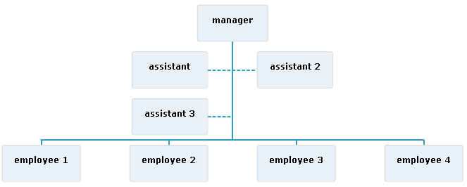

Assistants are children of a
dataProvider item that have a different relationship with the parent node. They
are laid out in a dedicated part of the tree using the
bothHanging layout algorithm.

To specify that a data item is an assistant of its parent,
the field of this data item that contains the assistant value must
be set to true.